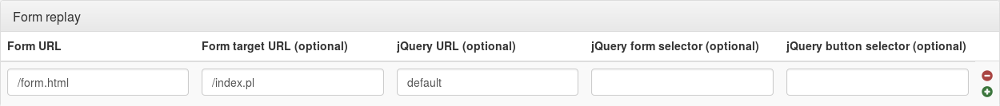
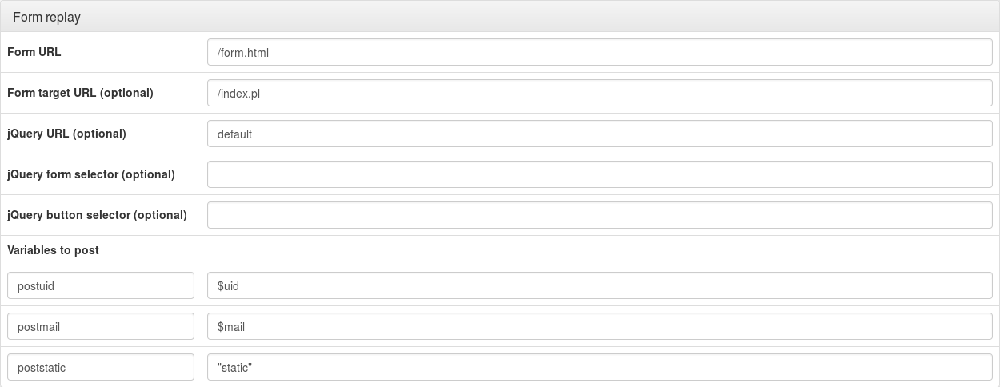

Form replay allows you to open a session on a protected application by filling a HTML POST login form and autosubmitting it, without asking anything to the user.
This kind of
SSO mechanism is not clean, and can lead to problems, like local password blocking, local session not well closed, etc.
Please always try to find another solution to protect your application with LL::NG. At least, check if it is not a known application, or try to adapt its source code.
If you configure form replay with LL::NG, the Handler will detect forms to fill, add a javascript in the html page to fill form fields with dummy datas and submit it, then intercept the POST request and add POST data in the request body.
POST data can be static values or computed from user's session.
To post user's password, you must enable
password storing. In this case you will be able to use
$_password to fill any password POST field.
You should grab some information:
URI of the html page which contains the form
URI the html form is sent to
Does the html page load jQuery ? If not, grab a jQuery
URL reachable by user (any version over jQuery 1.0 is suitable)
are there several html forms in the page ? If so, get a jQuery selector for the form you want to post
is user required to click on a button, for example in order to perform some script ? If so, get a jQuery selector for that button
names and values of the fields you want to control
If you don't know jQuery selector, just be aware that they are similar to css selectors: for example, button#foo points to the html button whose id is "foo", and .bar points to all html elements of css class "bar".
For example:
Form page
URI: /login.php
Target
URI: /process.php (if you let this parameter empty, target
URI is supposed to be the same as form page
URI)
jQuery
URL: http://ajax.googleapis.com/ajax/libs/jquery/1.11.1/jquery.min.js (if you let this parameter empty, jQuery is supposed to be already loaded; you can also set
default to point to jQuery
URL of
LL::NG portal)
jQuery form selector: #loginForm (if you let this parameter empty, browser will fill and submit any html form)
jQuery button selector: button.validate (if you let this parameter empty, the form will be submitted but no button will be clicked; if you set it to "none", no button will be clicked and the form will be filled but not submitted)
Fields:
postuid: $uid
postmail: $mail
poststatic: 'static'
Go in Manager, "Virtual Hosts" » virtualhost » "Form replay" and click on "New form replay".

Fill values here:
Then click on New variable and add all data with their values, for example:

You can define more than one form replay
URL per virtual host.